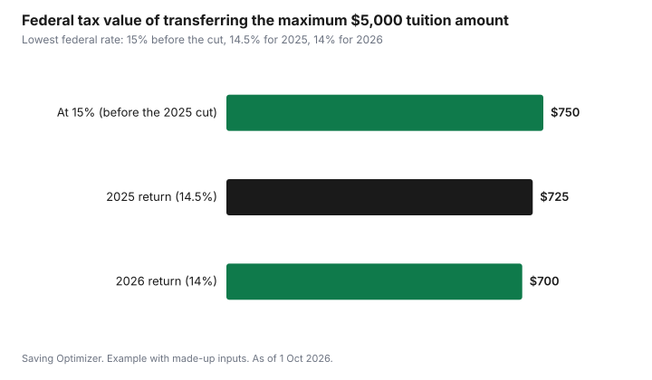

Education · Canada
Transferring the Tuition Credit to a Parent in Canada: Schedule 11 Step by Step
In Canada, a student can transfer up to $5,000 of their current-year federal tuition amount to a parent, grandparent, or spouse or common-law partner, after first using whatever they need to reduce their own federal tax to zero, as of 1 October 2026. The transfer is made on Schedule 11 of the student's tax return, and the person receiving it claims it on their own return. Because the federal tuition credit is calculated at the lowest federal tax rate, 14.5% for the 2025 tax year and 14% for 2026, the full $5,000 transfer is worth up to $725 for 2025 or $700 for 2026 in federal tax savings. Anything the student does not use or transfer carries forward for the student, who must claim it in the first year they have income tax to pay. The CRA says the student must file a return every year to keep a tuition carry-forward; if a year is missed, the amount is not carried forward.
Key takeaways
- The student must file a return, even with little income, to claim tuition and make a transfer.
- Order: the student uses what they need first, then may transfer up to $5,000 of the current-year federal amount, then carries forward the rest.
- Who can receive: a parent or grandparent of the student or of the student's spouse, or the student's spouse or common-law partner.
- Carry-forwards cannot be transferred; only the current year's amount can.
- Federal value of a full $5,000 transfer: up to $725 for 2025 or $700 for 2026.
- Example with made-up inputs: a student with $8,000 of tuition and low income transfers $5,000 and carries forward the rest.
What the tuition amount is
The tuition amount is a non-refundable tax credit for eligible tuition fees paid to a qualifying post-secondary institution, or to an institution certified for occupational skills courses. It reduces tax owing but does not create a refund on its own. Fees generally have to be more than $100 per institution for the year. Your school reports eligible fees on Form T2202, usually available in the student portal by the end of February. Some fees, such as residence, meal plans, parking and most student association fees, do not count.
The credit is worth the eligible amount multiplied by the lowest federal tax rate. The lowest federal rate was cut to 14% from 1 July 2025, which made the rate 14.5% for the 2025 tax year as a whole and 14% for 2026 and later years. So $1,000 of tuition is worth $145 of federal tax reduction on a 2025 return and $140 on a 2026 return.
The order: use, transfer, carry forward
Schedule 11 works through the tuition amount in a fixed order. First, the student claims any unused amounts carried forward from earlier years, and then the current year's amount, but only as much as needed to bring their federal tax to zero. The student cannot choose to skip this step to give a parent more. Second, the student can transfer some or all of what is left of the current-year amount, up to $5,000 minus the amount they used for the current year. Third, anything still unused carries forward to future years, for the student only.
| Step | What happens | Limit |
|---|---|---|
| 1. Use carry-forwards | Unused amounts from earlier years reduce the student's tax first | As much as needed to reach zero tax |
| 2. Use current year | Current-year amount reduces the student's remaining tax | As much as needed to reach zero tax |
| 3. Transfer | Student designates part of the current-year amount for one person | $5,000 minus the current-year amount the student used |
| 4. Carry forward | Anything left stays with the student for future years | Claim in the first year the student owes tax; file a return every year to keep it |
Who can receive the transfer
The student chooses who receives the transferred amount. It can go to the student's spouse or common-law partner, or to a parent or grandparent of the student or of the student's spouse or common-law partner. If the student has a spouse or common-law partner who claims the spouse amount or receives a transfer of other credits from the student, the parent or grandparent cannot receive the tuition transfer. The amount can be split between people, but the total cannot exceed the limit.
- Parent or grandparent: claims the transferred amount on line 32400 of their return.
- Spouse or common-law partner: claims it through Schedule 2.
- Student signs the transfer section of the T2202 (or the provincial form where one applies) and fills in Schedule 11 lines for the transfer.
- The receiving person keeps the signed T2202 in case the CRA asks.
What the transfer is worth
The federal value depends only on the amount transferred and the year's lowest federal rate, not on the parent's tax bracket. A parent in the top bracket and a parent in the lowest bracket save the same federal amount, as long as they owe enough tax to use the credit.
| Amount transferred | 2025 return (14.5%) | 2026 return (14%) |
|---|---|---|
| $1,000 | $145 | $140 |
| $2,500 | $362.50 | $350 |
| $5,000 (maximum) | $725 | $700 |

Provincial credits work differently. Ontario eliminated its provincial tuition credit for terms starting after 4 September 2017, and several other provinces have also ended theirs, so in those provinces the transfer saves only the federal amount. Other provinces still have a tuition credit with their own transfer rules and limits, reported on the provincial schedule. If you file in a province that kept its credit, check the provincial worksheet in your tax software or the provincial forms book.
Transfer or carry forward?
Often the family's instinct is to transfer the maximum, and frequently that is right: the parent gets a tax saving now, and the student may not owe much tax for several years. But a carry-forward is still worth having, as long as the student files a return every year, as the CRA requires to keep it, and claims it in the first year they owe tax. Consider who needs the money now, whether the student expects a well-paid co-op term or job soon, and whether the parent would use the transfer to pay part of the student's costs. Since the student cannot transfer carry-forwards later, the decision is made each year for that year's amount.
- Transfer when the parent owes tax and the family is sharing school costs.
- Carry forward when the student will soon owe tax, for example after graduation or during a paid co-op term.
- Split: transfer part and carry forward the rest if both make sense.
Example with made-up inputs: a second-year student
These numbers are an example with made-up inputs. They do not reflect any real student's tuition or income. Sam paid $8,000 of eligible tuition in 2026 and earned $10,000 from a summer job, which is low enough that Sam owes no federal tax after the basic personal amount. Sam uses $0 of tuition, can transfer up to $5,000 and carries the rest forward.
| Item | Amount |
|---|---|
| Current-year eligible tuition | $8,000 |
| Used by Sam to reduce tax | $0 |
| Transferred to a parent | $5,000 |
| Federal value to the parent (14%) | $700 |
| Carried forward for Sam | $3,000 |
If Sam had earned enough to owe federal tax, Sam would have used part of the $8,000 first, and the maximum transfer would have been $5,000 minus that amount. The parent's federal saving would have been smaller.
How to do it on your returns
- Download the T2202 from the school portal.
- Student files a return and completes Schedule 11, entering the T2202 amounts.
- Tax software (or Schedule 11 itself) calculates how much the student must use and the maximum transfer.
- Student enters the amount to transfer and the person receiving it, and signs the T2202 transfer section.
- The parent or grandparent enters the transferred amount on line 32400; a spouse uses Schedule 2.
- Keep the T2202 and receipts for six years in case of review.
The student should file even when they owe no tax. Filing records the tuition carry-forward, qualifies them for the Canada Groceries and Essentials Benefit and provincial credits, and builds RRSP contribution room from earned income. If you are a student new to filing, the first job taxes guide covers the basics.
Related credits on Schedule 11
Schedule 11 also handles the Canada Training Credit, a refundable credit for eligible adults aged 25 to 65 who build up a training credit limit over time, and amounts for occupational skills courses. Federal education and textbook amounts were eliminated in 2017; only carry-forwards from before then remain. Interest on government student loans is a separate credit on line 31900 that only the student can claim, and it can be carried forward five years; see the student loan repayment guide.
| Item | Amount |
|---|---|
| Eligible tuition on T2202 | |
| Amount the student must use | |
| Maximum transfer ($5,000 minus amount used) | |
| Amount transferred and to whom | |
| Amount carried forward |
Common mistakes
- Parent claims the transfer, but the student never filed or signed the T2202.
- Trying to transfer carry-forward amounts from earlier years.
- Skipping a year of filing, which the CRA says means the tuition amount is not carried forward.
- Claiming residence, meal plan or parking fees as tuition.
- Transferring more than $5,000, or more than $5,000 minus what the student used.
- Assuming the provincial credit still exists in Ontario or other provinces that ended it.
Sources
- Canada Revenue Agency, Line 32300: tuition, education and textbook amounts, and Transferring and carrying forward amounts (canada.ca), as of 1 Oct 2026.
- Canada Revenue Agency, Line 32400: tuition amount transferred from a child or grandchild (canada.ca), as of 1 Oct 2026.
- Canada Revenue Agency, Schedule 11, Federal Tuition Amount and Canada Training Credit, as of 1 Oct 2026.
- Canada Revenue Agency, Income Tax Folio S1-F2-C2, Tuition Tax Credit, as of 1 Oct 2026.
- Government of Canada, federal lowest tax rate reduced to 14% from 1 July 2025 (canada.ca), as of 1 Oct 2026.
- Government of Ontario, elimination of the Ontario tuition and education tax credits after 4 September 2017, as of 1 Oct 2026.
- All amounts in the student example are made-up inputs.
Frequently asked questions
How much tuition can a student transfer to a parent in Canada?
Up to $5,000 of the current-year federal tuition amount, minus whatever the student needed to reduce their own federal tax to zero, as of 1 Oct 2026.
What is a $5,000 tuition transfer worth to a parent?
For the federal credit, $5,000 multiplied by the lowest federal rate: $725 on a 2025 return (14.5%) or $700 on a 2026 return (14%). Provincial value depends on whether the province still has a tuition credit.
Can a student transfer tuition carry-forward amounts to a parent?
No. Only the current year's amount can be transferred. Carry-forward amounts stay with the student, who must claim them in the first year they have income tax to pay and must file a return every year to keep them.
Does the student have to file a tax return to transfer tuition?
Yes. The student completes Schedule 11 on their own return and signs the transfer section of the T2202 for the person receiving the amount.
Does Ontario have a provincial tuition credit?
No. Ontario eliminated its provincial tuition credit for terms starting after 4 September 2017, so an Ontario transfer saves only the federal credit.
Researched and drafted with AI assistance and fact-checked against official Canadian sources. How we create content.
Disclosure: Saving Optimizer may earn a commission if a partner link is added later, such as a tax software offer type. No partnership with any tax software company is claimed on this page, and no provider is ranked. Education only; this is not tax advice.